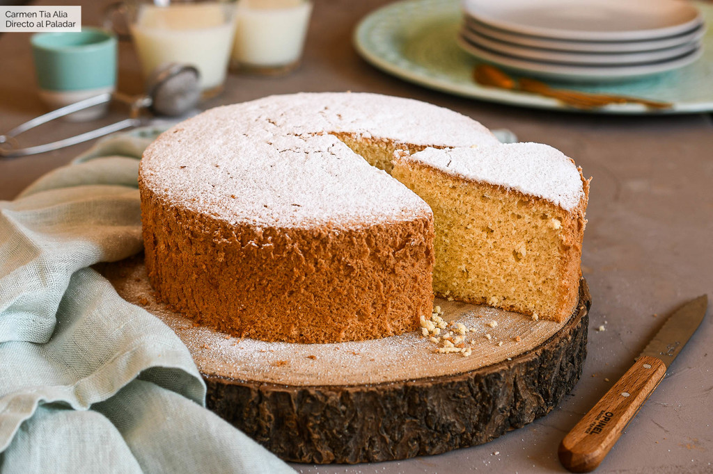

Bizcocho casero

Bizcocho casero
Ingrediente para 8 personas
-
4 huevos
-
120 g de Harina de trigo
-
120 g de Azúcar
Pasos para preparar la receta
-
Separamos las claras de las yemas en dos recipientes distintos. Batimos las claras con unas varillas a velocidad baja. Cuando empiecen a espumar y sin dejar de batir, añadimos poco a poco la mitad del azúcar. Continuamos batiendo durante unos seis-ocho minutos más a velocidad alta hasta conseguir un merengue firme.
-
A continuación, sin necesidad de lavar las varillas, batimos las yemas junto con el resto del azúcar. El color cambiará y se volverán pálidas, también aumentarán en volumen por la cantidad de aire incorporado. Paramos de batir cuando las varillas dibujen un trazo en las yemas.
-
Añadimos la harina, tamizada, y las claras, batidas, al recipiente con las yemas. Lo haremos de forma alterna y en tres partes, integrando la harina o las claras con movimientos envolventes y mucha suavidad. No añadimos el ingrediente siguiente hasta que no esté bien incorporado el anterior.
-
Cubrimos la base de un molde de 18 cm de diámetro y paredes altas con un disco de papel vegetal. Vertemos la masa en su interior y alisamos la superficie. Introducimos en el horno, precalentado a 160º C con calor arriba y abajo, y cocemos durante 35-40 minutos o hasta que veamos que está bien cocido.
-
El tiempo de cocción dependerá del horno de cada cual, al igual que la temperatura que puede oscilar 10º C arriba o abajo. Una vez retirado el bizcocho del horno, dejamos que se atempere antes de desmoldar. Podemos espolvorear con azúcar glasé en el momento de servir, opcional.